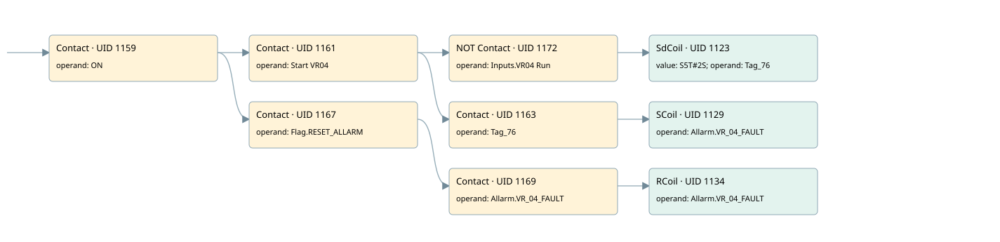

vr04
allarms 1 · 검색 색인 순서 31 · 원본 내부 NID 추정 33
백업 PLF 원본의 3061927 바이트 위치에서 복원한 XML. 검색 문서 1811의 객체 키 161022007162000000000000와 연결했다. 이름 해석 10/10개. 남은 RefId는 상수 또는 미해석 참조다.
연결 구조 다시 그리기
원본 Part/PCon/Wire를 이용한 연결도다. TIA 화면의 래더 배치 또는 실행 결과를 재현한 그림은 아니다. 핀 연결은 아래 표와 원본 XML을 기준으로 읽는다. 노드 위에 마우스를 두면 피연산자 이름을 볼 수 있다.

접점·코일·블록과 피연산자
| Part UID | Gate | Negated 핀 | 연결 피연산자 |
|---|---|---|---|
| 1159 | Contact | operand = ON | |
| 1161 | Contact | operand = Start VR04 | |
| 1172 | Contact | operand | operand = Inputs.VR04 Run |
| 1123 | SdCoil | value = S5T#2S; operand = Tag_76 | |
| 1163 | Contact | operand = Tag_76 | |
| 1129 | SCoil | operand = Allarm.VR_04_FAULT | |
| 1167 | Contact | operand = Flag.RESET_ALLARM | |
| 1169 | Contact | operand = Allarm.VR_04_FAULT | |
| 1134 | RCoil | operand = Allarm.VR_04_FAULT |
접점 경로를 펼친 조건식
Contact·O/A·비교기의 원본 연결을 읽기 쉽게 펼친 보조 해석이다. POWER는 전원 레일 시작을 뜻한다. 호출 블록·에지·타이머의 내부 동작과 다중 쓰기 순서는 이 표로 실행 검증하지 않았다. 미해석 핀과 RefId는 원문 연결표에서 확인한다.
| UID | 동작 | 대상 | 원본 접점 경로 | 내용 |
|---|---|---|---|---|
| 1123 | SdCoil | Tag_76 | ((ON AND Start VR04) AND NOT [Inputs.VR04 Run]) | 시간 동작 SdCoil; 타이머 의미 추가 확인 / 시간 인자 S5T#2S |
| 1129 | SCoil | Allarm.VR_04_FAULT | ((ON AND Start VR04) AND Tag_76) | 조건 성립 시 Set |
| 1134 | RCoil | Allarm.VR_04_FAULT | ((ON AND Flag.RESET_ALLARM) AND Allarm.VR_04_FAULT) | 조건 성립 시 Reset |
원본 배선 연결
| Wire UID | 동일 Wire 연결 끝점 |
|---|---|
| 1171 | Powerrail {} ↔ Part 1159.in |
| 1145 | ORef 1135 (ON) ↔ Part 1159.operand |
| 1160 | Part 1159.out ↔ Part 1161.in ↔ Part 1167.in |
| 1146 | ORef 1136 (Start VR04) ↔ Part 1161.operand |
| 1162 | Part 1161.out ↔ Part 1172.in ↔ Part 1163.in |
| 1175 | ORef 1173 (Inputs.VR04 Run) ↔ Part 1172.operand |
| 21 | Part 1172.out ↔ Part 1123.in |
| 1147 | ORef 1137 (S5T#2S) ↔ Part 1123.value |
| 1148 | ORef 1138 (Tag_76) ↔ Part 1123.operand |
| 1149 | ORef 1139 (Tag_76) ↔ Part 1163.operand |
| 22 | Part 1163.out ↔ Part 1129.in |
| 1152 | ORef 1141 (Allarm.VR_04_FAULT) ↔ Part 1129.operand |
| 1154 | ORef 1142 (Flag.RESET_ALLARM) ↔ Part 1167.operand |
| 1168 | Part 1167.out ↔ Part 1169.in |
| 1155 | ORef 1143 (Allarm.VR_04_FAULT) ↔ Part 1169.operand |
| 1170 | Part 1169.out ↔ Part 1134.in |
| 1157 | ORef 1144 (Allarm.VR_04_FAULT) ↔ Part 1134.operand |
식별자 해석 근거 10개
| ORef UID | RefId | 이름 | IdentXmlPart 파일 | 해석 방법 |
|---|---|---|---|---|
| 1135 | 1 | ON | 0658-IdentXmlPart.xml | UID/RID + search-text + NID agreement |
| 1136 | 134 | Start VR04 | 0658-IdentXmlPart.xml | UID/RID + search-text + NID agreement |
| 1173 | 301 | Inputs.VR04 Run | 0657-IdentXmlPart.xml | UID/RID + search-text + NID agreement |
| 1138 | 135 | Tag_76 | 0658-IdentXmlPart.xml | UID/RID + search-text + NID agreement |
| 1137 | 28 | S5T#2S | 0656-IdentXmlPart.xml | literal candidate: UID/RID/NID + nearby named declarations + search-text agreement |
| 1139 | 135 | Tag_76 | 0658-IdentXmlPart.xml | UID/RID + search-text + NID agreement |
| 1141 | 137 | Allarm.VR_04_FAULT | 0657-IdentXmlPart.xml | UID/RID + search-text + NID agreement |
| 1142 | 13 | Flag.RESET_ALLARM | 0657-IdentXmlPart.xml | UID/RID + search-text + NID agreement |
| 1143 | 137 | Allarm.VR_04_FAULT | 0657-IdentXmlPart.xml | UID/RID + search-text + NID agreement |
| 1144 | 137 | Allarm.VR_04_FAULT | 0657-IdentXmlPart.xml | UID/RID + search-text + NID agreement |
검색 코드 보조 자료
참조 명칭을 찾기 위한 자료이며 실행 순서나 AND/OR 관계는 위 연결표로 확인한다.
"on" "start vr04" "inputs"."vr04 run" "tag_76" s5t#2s "flag".reset_allarm "allarm".vr_04_fault "allarm".vr_04_fault "tag_76" "allarm".vr_04_fault